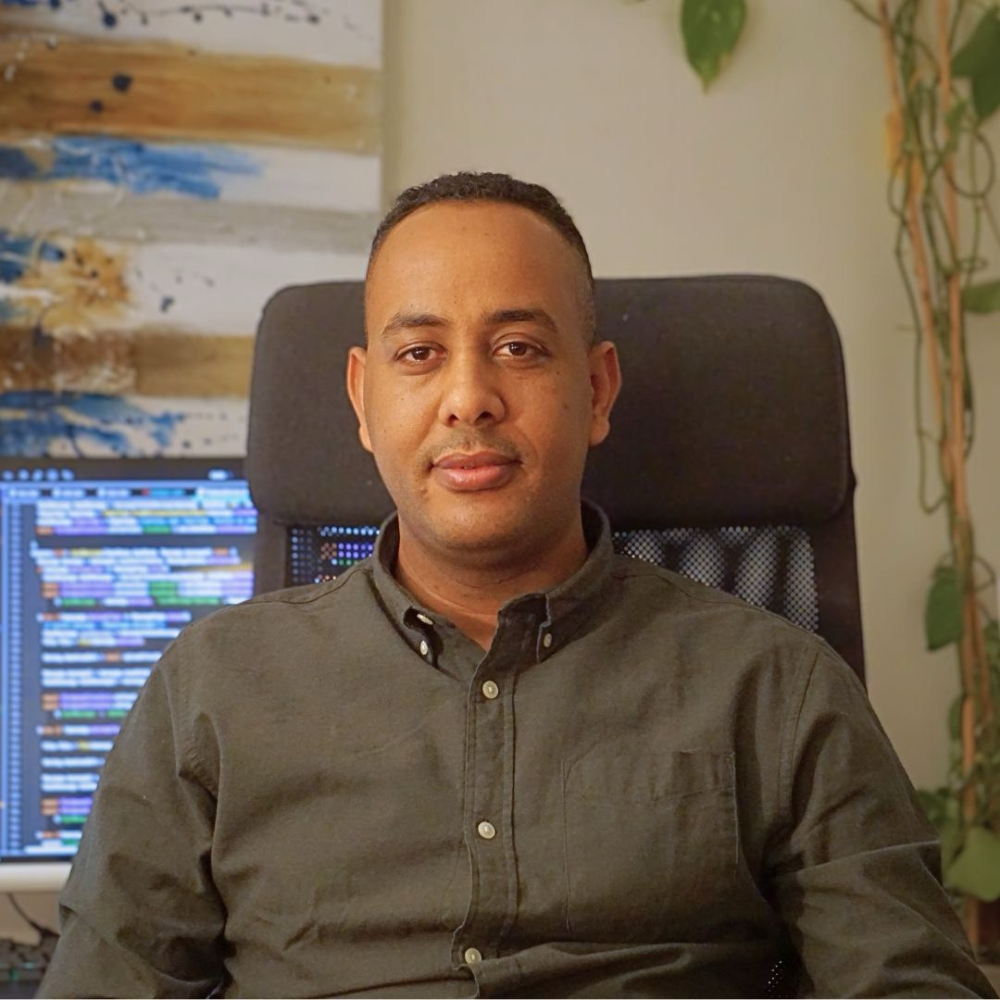

Malkaa Yonas Hambissa

Summary
Jeg har en tverrfaglig bakgrunn innen økonomi, IT-drift og cybersikkerhet, og
trives aller best i skjæringspunktet mellom teknologi og forretning.
Med erfaring fra både analyseverktøy som Python, R, SQL og Power BI, og innsikt i ERP-systemer og
informasjonssikkerhet, brenner jeg for å bruke teknologi og data til å løse problemer og skape verdi.
Jeg har masterutdanning i Business Analytics og stor interesse for ESG, bærekraft og digital transformasjon.
Education
- 2022–2025: Master i Business Analytics – NMBU
- 2023–2025: Fagskolegrad i Cybersikkerhet – Gokstad Akademiet
- 2022–2024: Fagskolegrad i IT-Drift – TISIP Fagskolen
- 2022–2025: Årsstudium i Bærekraftige Innkjøp – Høyskolen Kristiania
- 2015–2019: Bachelor i Økonomi og Administrasjon – NMBU
- 2008: Norsk Trinn III – Universitetet i Oslo
- 2007–2008: Språkkurs – Sogn VGS
Work Experience
- Helsefagarbeider (vikar) – Frogn kommune, Hjemmetjeneste (jun 2024 – Nåtid)
- Helsefagarbeider (vikar) – Ås kommune (jan 2021 – Nåtid)
- Helsefagarbeider – Lovisenberg Omsorg, Smestadheimmet (aug 2015 – jan 2021)
- Pleiemedhjelper – Oslo Kommune, Smestad Sykehjem (sep 2008 – jul 2014)
Skills
- Dataanalyse: Python, R, SQL, Power BI
- ERP-systemer og automatisering
- Azure, Microsoft 365, PowerShell
- Maskinlæring, modellering, forecasting
- Informasjonssikkerhet, ITIL, CISSP-forberedelse
- Innkjøp og verdikjedestyring
- Digital transformasjon
Languages
- Oromo – Morsmål
- Norwegian – Flytende
- Amharic – Veldig bra
- English – Veldig bra
Certifications & Achievements
- Forbereder meg til CISSP-sertifisering
- Masteroppgave: ESG-analyse med NLP og statistisk modellering
Other